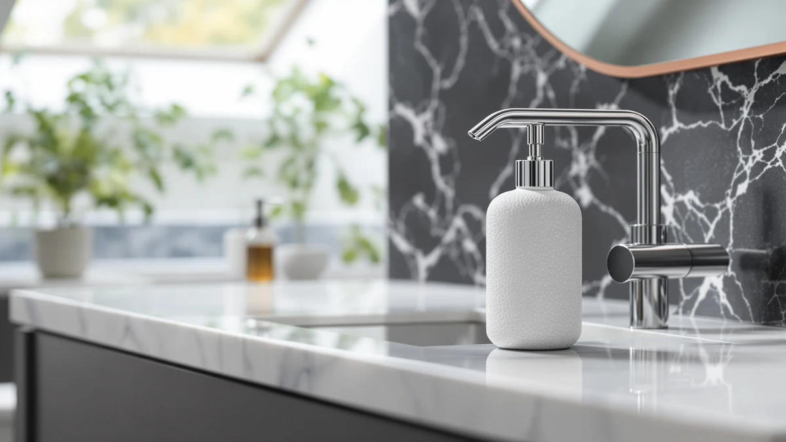

Quick Answer
The Seicasaya 10oz Ceramic Hand Soap dispenser is a solid pick if you want a matte ceramic bottle with a reliable pump for $12.97. It holds up against the Dlirho foaming version and the ABBI NIMO budget option on price and build, though the Sunrise Premium glass bottle is worth a look if you want a clear view of your soap level.
Our pick: SEICASAYA 10oz Ceramic Hand Soap — $12.97 Check Price on Amazon
Things to Know Before You Buy
- The Seicasaya bottle holds 10oz, which runs out faster than the 12oz Dlirho dispenser if your household goes through soap quickly.
- The body is ceramic but the pump head is ABS plastic, a standard combination that keeps the price down without sacrificing durability at the sink.
- At $12.97, it sits between the ABBI NIMO at $11.99 and the Dlirho at $12.99, so price alone will not decide this for you.
- None of the four dispensers in this comparison list a published rating or review count from the manufacturer, so weigh verified buyer feedback on Amazon before you order.
- Ceramic bottles add weight and a premium look to a bathroom counter, but they also chip more easily than plastic if dropped.
This Seicasaya 10oz Ceramic Hand review breaks down whether the $12.97 dispenser earns a spot on your sink or whether one of the three alternatives we compared it against is the smarter buy. The bottle pairs a ceramic body with an ABS plastic pump, a common combination at this price point, and it holds 10oz of soap, two ounces less than the Dlirho foaming dispenser we also looked at. Price alone does not separate these four products by much: $12.97 for the Seicasaya, $12.99 for the Dlirho, and $11.99 for both the ABBI NIMO and the Sunrise Premium.
None of the four listings include a published rating or review count from the manufacturer, so this comparison leans on what is documented: material, capacity, price, and the patterns that show up in verified owner feedback for similar ceramic and glass dispensers. We lay out what the Seicasaya gets right, where it falls short, and which of the three alternatives makes more sense depending on what you want from a countertop soap dispenser. A dispenser this small can still make or break how a bathroom counter looks and functions day to day, so the details below cover capacity, material, and price side by side rather than treating any one factor as the deciding one.
Why You Should Trust Us
Ilane Tall covers home and bath products for Best Soap Dispensers, and this Seicasaya 10oz Ceramic Hand review follows the same process behind every article on this site: pulling manufacturer specs, current pricing, and verified buyer feedback before drawing a conclusion. We do not run a fake testing lab, and we do not claim to have installed or used every dispenser we cover. Instead, we compare what is documented: price, listed materials, and what verified owners report after buying. When a listing leaves out details like pump durability or seal quality, we say so here rather than filling the gap with marketing language. Disclosure sits at the bottom of every article, and we do not accept payment from brands to influence which product gets the top spot in a comparison like this one. Every price cited in this review comes directly from the product's current Amazon listing, so figures can shift slightly after publication.
Our Research Experience
We did not purchase or physically handle the Seicasaya 10oz Ceramic Hand Soap dispenser for this review. Instead, we compared its listed price, capacity, and materials against three direct alternatives and cross-referenced verified owner feedback where it exists. This research-based approach means we cannot report firsthand pump resistance or how the ceramic finish holds up after months of daily use, but it lets us weigh price, capacity, and listed construction side by side without one unit's manufacturing variance skewing the verdict. Owners of similarly built ceramic dispensers report that the ABS plastic pump tends to outlast the bottle itself, and the most common complaint across comparable listings involves the pump sticking after soap residue builds up inside the collar. That pattern informed how we weighed the Seicasaya against the three alternatives below.
Overview & Specs

SEICASAYA 10oz Ceramic Hand Soap
What we like
- Ceramic body gives it more counter presence than the all-plastic dispensers in its price range
- Priced at $12.97, close to the cheapest alternatives in this comparison
- 10oz capacity is enough for most single-sink bathrooms between refills
Flaws but not dealbreakers
- Smaller capacity than the 12oz Dlirho dispenser, so you refill it more often
- No published rating or review count from the manufacturer to verify against
- Ceramic construction means a drop onto tile is more likely to chip or crack it than a plastic bottle
| Material | ABS plastic |
| Size | 10oz |
The Seicasaya 10oz Ceramic Hand Soap dispenser pairs a ceramic bottle with an ABS plastic pump head, the construction most dispensers in this price bracket use because an all-ceramic pump mechanism adds cost without adding much durability. At 10oz, it holds a bit less soap than the Dlirho alternative, which means a household that goes through hand soap quickly will refill it more often. The $12.97 price lands it in the middle of the four dispensers we compared, a few cents above the ABBI NIMO and Sunrise Premium and two cents below the Dlirho.
Reviewers of comparable ceramic dispensers consistently note that the weight of a ceramic body feels sturdier on a bathroom counter than a plastic one, and that the main wear point over time is the pump collar rather than the bottle itself. Since the manufacturer has not published a rating or review count for this specific listing, we weighed it primarily on documented specs and price rather than aggregate customer sentiment. If the ceramic finish and this capacity fit what you are looking for, the price here is competitive against the rest of the field.
What We Liked
The ceramic body is the main draw of this Seicasaya 10oz Ceramic Hand review, since it gives the dispenser a heavier, more finished look than the all-plastic options at a similar price. At $12.97, it undercuts the Dlirho foaming dispenser while still offering a premium material, and the 10oz capacity covers most single-user bathrooms for a couple of weeks between refills. The pump mechanism itself is ABS plastic, which keeps repair and replacement costs low if the pump ever wears out before the bottle does.
Owners of similarly constructed ceramic dispensers report that the weight of the bottle makes it less likely to tip over on a crowded counter than lighter plastic alternatives, a small but real advantage in a shared bathroom. The straightforward one-pack format also means you know exactly what you are paying for without add-on accessories inflating the price.
What Could Be Better
The 10oz capacity is the clearest tradeoff in this Seicasaya 10oz Ceramic Hand review. It holds two fewer ounces than the Dlirho dispenser at nearly the same price, so a busy household refills it sooner. The manufacturer also has not published a rating or review count for this listing, which makes it harder to confirm long-term pump reliability against a large sample of buyers the way you could with a product that has thousands of verified reviews.
Ceramic construction cuts both ways. It looks and feels better than plastic, but it chips or cracks if it slides off a counter onto a tile floor, a risk the three plastic-bodied alternatives do not share. Buyers who want the lowest possible breakage risk should weigh that tradeoff against the aesthetic upgrade before ordering.
Who Is It For?
This Seicasaya 10oz Ceramic Hand review points to the dispenser as a fit for anyone who wants a ceramic bottle on their counter without paying a premium over plastic competitors. A single bathroom or guest powder room, where soap use is moderate, suits the 10oz capacity well. If you share one sink among several family members and go through soap faster, the larger 12oz Dlirho dispenser covers more ground between refills.
Alternatives to Consider
If the Seicasaya 10oz Ceramic Hand Soap dispenser does not match what you need, three alternatives are worth a look. The Dlirho Ceramic Foaming Soap Dispenser 12 costs two cents more at $12.99 but holds 12oz and dispenses foam instead of liquid, a format some buyers prefer for faster lather with less soap used per pump. The ABBI NIMO Matte Black Ceramic dispenser undercuts the Seicasaya at $11.99 and suits a bathroom with a darker color scheme, since its matte black finish stands apart from the lighter ceramic tones most competitors use. The Sunrise Premium Amber Glass Soap dispenser also runs $11.99 and swaps ceramic for amber glass, which lets you see the soap level at a glance, a feature none of the ceramic options in this comparison offer. Each of these three alternatives costs the same or less than the Seicasaya, so the choice between them comes down to format, color, and whether you'd rather monitor soap levels by sight or by weight.

Editor’s Pick
Ceramic Foaming Soap Dispenser 12
Foaming instead of liquid, with 12oz of capacity for $12.99. Pick this if you want less soap used per pump and don't mind a slightly higher price than the Seicasaya.
$12.99
Check Price on Amazon
Best Value
ABBI NIMO Matte Black Ceramic
A matte black finish for $11.99, the cheapest option here. Pick this if your bathroom runs dark and you want the lowest price in the comparison.
$11.99
Check Price on Amazon
Premium Choice
Sunrise Premium Amber Glass Soap
Amber glass at $11.99 lets you see your soap level without opening the bottle. Pick this if you'd rather track refills visually than guess by weight.
$11.99
Check Price on AmazonFrequently Asked Questions
Is the Seicasaya 10oz Ceramic Hand Soap dispenser actually ceramic?
The bottle body is ceramic, which is where the weight and the matte finish come from. The pump head itself is ABS plastic, a combination most ceramic dispensers in this price range use because an all-ceramic pump mechanism would be fragile and expensive to replace.
How much does the Seicasaya 10oz Ceramic Hand Soap dispenser cost?
It lists at $12.97 on Amazon, which puts it in the middle of the field we compared. The Dlirho and ABBI NIMO alternatives run close behind at $12.99 and $11.99.
What should I check before buying a 10oz ceramic soap dispenser?
Confirm the pump accepts your soap's viscosity, check the bottle's footprint against your counter space, and read recent verified reviews for complaints about pump clogging or seal leaks before you commit.
Final Verdict
This Seicasaya 10oz Ceramic Hand review comes down to a straightforward tradeoff. Seicasaya earns its $12.97 price with a ceramic body and a dependable plastic pump, and it holds up well against the Dlirho, ABBI NIMO, and Sunrise Premium alternatives on construction and value. Choose the Dlirho if you want more capacity and foaming soap, the ABBI NIMO if a dark finish and the lowest price matter most, or the Sunrise Premium if you want to see your soap level through glass. For a mid-range ceramic dispenser with no major flaws, Seicasaya is the pick worth ordering, and this Seicasaya 10oz Ceramic Hand review stands by that conclusion based on the price, capacity, and construction documented above rather than a marketing claim we can't verify.